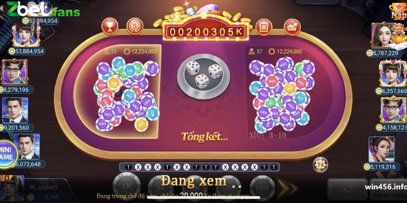

Cách Chơi Tài Xỉu Online Luôn Thắng, Hiệu Quả Và Đơn Giản Nhất
POSTED ON 13/04/2024 BY ADMIN
Cách chơi tài xỉu online luôn thắng là tổng hợp những bí quyết hay giúp thành viên chinh phục tựa game. Sản phẩm này tuy rất dễ hiểu nhưng không hề dễ kiếm được tiền thưởng. Muốn biết bí quyết của giới cao thủ, thành viên hãy theo dõi bài viết của Zbet dưới đây.
Tìm hiểu tài xỉu online
Trước khi đi vào khám phá cách chơi tài xỉu online luôn thắng, hãy điểm qua vài nét về dòng game live casino này. Đây là một trong những loại hình giải trí hấp dẫn và phổ biến rộng rãi ở Việt Nam.
Trò chơi này còn có tên là Sicbo hay lớn nhỏ, một sản phẩm có nguồn gốc từ Trung Quốc. Khi xưa, binh lính đã dùng cách chơi này để giải trí trong quân đội.
Tài xỉu hiện nay không bao giờ vắng mặt tại các sòng bài, nhà cái
Về sau, giới thương nhân đã mang hình thức cá cược này đi khắp thế giới. Tuy nhiên, phải đến khi các sòng bài tại Las Vegas giới thiệu vào năm 2003 thì sản phẩm mới nổi tiếng và được quần chúng biết đến rộng rãi.
Tài xỉu online là một hình thức mô phỏng cách chơi truyền thống. Giờ đây, dù ở nhà, bạn vẫn có thể kết nối Internet và giải trí với dòng game ăn khách này.
Cách chơi tài xỉu online luôn thắng thông qua việc đặt cược
Muốn kiếm được tiền trong game này, anh em phải nắm rõ các quy tắc đặt cược cơ bản trước. Sau khi lắc 3 viên xúc xắc, thành viên chọn Tài (nếu nghĩ tổng điểm từ 11 – 17) hoặc Xỉu (nếu cho rằng điểm số chỉ từ 4 – 10). Ngoài ra, còn có những cửa cược khác phổ biến như.
Cược bộ ba
Khi chọn cược bộ ba đồng nhất, thành viên đang dự đoán ba viên xúc xắc có kết quả giống nhau. Trường hợp này cực kỳ hiếm nên tỷ lệ ăn ở đây lên đến 1:180. Dù vậy, anh em phải thận trọng vì nguy cơ mất tiền trong kiểu cược này rất cao.
Cược bộ đôi
Ở đây, người chơi đặt cược dự đoán ⅔ mặt xúc xắc có kết quả giống nhau. Xác suất thắng ở đây là khá thấp nên tỷ lệ thưởng là đặt 1 ăn 10. Tuy nhiên, giới cao thủ khuyên rằng cách chơi tài xỉu online luôn thắng là tránh xa những kèo có tỷ lệ ăn cao như thế này. Đa phần, hội viên sẽ mất nhiều hơn được khi chọn cửa này.
Cược tổng tài xỉu
Trong loại cược này, bạn phải đoán chính xác tổng điểm các mặt xúc xắc. Tùy theo độ chính xác của kết quả mà tỷ lệ ăn có thể từ 6 lần đến gấp 60 lần số tiền đặt cược.
Tìm hiểu các loại cược để tăng cơ hội thắng trong tài xỉu
Kinh nghiệm chơi tài xỉu đơn giản, hiệu quả từ cao thủ
Muốn biết cách chơi tài xỉu online luôn thắng, đầu tiên bạn phải hiểu rõ luật chơi. Tiếp đến, thành viên cần biết một số kiến thức đặc biệt dưới đây.
Cách bắt cầu bệt
Cầu bệt là dạng cầu thường thấy nhất khi phân tích lịch sử kết quả một bàn cược. Ở đây, khi bạn thấy một trong hai cửa Tài hoặc Xỉu xuất hiện liên tục từ 3 ván trở đi thì có cầu bệt.
Khi phát hiện cầu bệt, thành viên hãy tìm ra quy luật xuất hiện của chúng. Về sau, khi thấy dấu hiệu tương tự, bạn sẽ dễ dàng cược theo và giành chiến thắng.
Cách chơi tài xỉu online luôn thắng theo cách đánh gấp thếp chuẩn
Gấp thếp là chiến thuật dùng được trong mọi game cá cược nhưng không phải ai cũng thắng được. Chỉ khi có nguồn vốn dồi dào, theo được đến cùng thì mới kiếm được tiền thưởng lớn.
Đầu tiên, bạn chọn một trong hai cửa Tài hoặc Xỉu rồi đặt số tiền vốn nhất định. Nếu ván đó thắng thì sẽ giữ nguyên mức nhưng nếu thua thì tăng lên gấp đôi. Cứ làm như thế cho đến khi thắng, bạn sẽ có được một số tiền thắng cực lớn.
Chơi tài xỉu theo cầu 1 -1
Một cách chơi tài xỉu online luôn thắng nữa là bắt cầu đảo 1 – 1. Ở đây, thành viên có thể nhận diện chúng khi thấy hai cửa Tài Xỉu xuất hiện đan xen trong vòng 3 – 4 ván.
Tương tự như trên, anh em cần đi tìm quy luật để sử dụng cho những lượt chơi tiếp theo. Càng chịu khó phân tích nhiều dữ liệu, cơ hội thắng của bạn càng cao nên hãy kiên trì.
Anh em nên tìm cách chơi tài xỉu online luôn thắng để thuận lợi kiếm tiền
Đánh tài xỉu online theo công thức 1-3-2-4
Dạng cầu có công thức 1-2-3-4, 4-3-2-1 xuất hiện rất phổ biến trong tài xỉu. Ở đây, trong bài phiên liên tiếp, bạn thấy xuất hiện tình trạng 1 Tài-2 Xỉu-3 Tài-4 Xỉu, 4 Tài-3 Xỉu-2 Tài-1 Xỉu. ‘

Công thức 1-3-2-4 cực hữu ích khi chơi tài xỉu trực tuyến
Khi nhận diện được chúng, bạn nên chớp lấy cơ hội đặt cược theo để giành chiến thắng. Tuy nhiên, càng về sau thì nên đặt ít vốn lại hoặc dừng lại sau khoảng 3 – 4 ván vì có nguy cơ đảo cầu.
Cách chơi tài xỉu online luôn thắng là dù đặt cược theo hình thức nào thì cũng nên tính toán nguồn vốn hợp lý. Anh em lưu ý rằng không dùng quá 20% tổng số tiền mình có trong một lần cược để tránh rủi ro.
Trên đây là những cách chơi tài xỉu online luôn thắng dành cho người mới bắt đầu. Những phương pháp này giúp rất nhiều cao thủ kiếm tiền thưởng lớn trong cuộc chơi. Nếu muốn biết thêm các mẹo chinh phục sản phẩm này, đừng quên cập nhật tại Zbet mỗi ngày.